tOps
A tool for operating tems servers remotely.
Monitor many sites on one screen, and handle restarts, configuration checks and changes, and deployment without going on site. It now supports mobile (Android) and offline work as well.
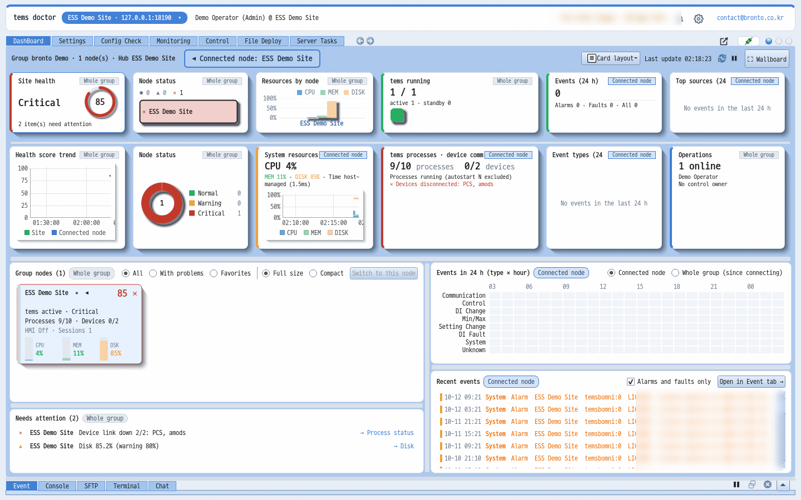
Everything operators do every day, in one program
Dashboard · monitoring
Gathers the status of every node in a group on one screen and shows what needs attention first. Click an item to go straight to that node's screen and act on it.
- Site health score, status card per node, summary of tems processes and device communication
- 24-hour event heat strip and recent events (colored by type)
- Drag and enlarge cards, control-room mode (full screen, large text)
- 100+ nodes - automatic compact view, top-N resources, 10-column enlarged window
- Color theme per server to avoid mixing up sites, with disconnections shown separately
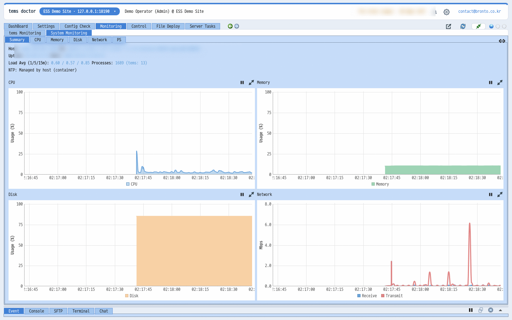
tems environment check NEW
Checks tems configuration at once, from temsconfig.xml to every linked file (XML and .conf). Results are grouped into problems that make tems discard settings or fail to start or control (errors), things that work but may not be what you intended (warnings), and notes (info).
- Six stages: process list → environment files → linked files → data maps → devices → slave maps
- Results show rule number, file and line; double-click to open that line in the editor
- Covers relationships between files, such as device slave_id, data map bit overflow and tpool link targets
- Save as a report to keep as a site inspection record
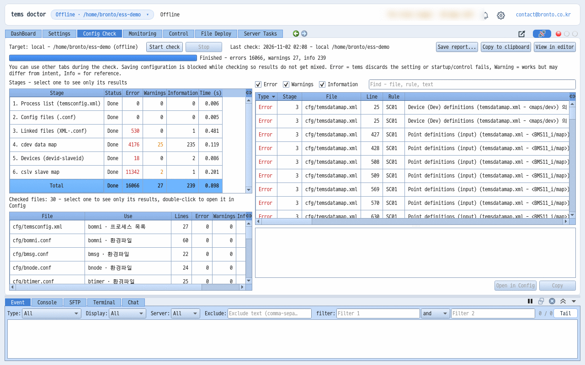
Validated configuration editing
Instead of editing tems configuration files as raw text, you edit them on screens with descriptions and allowed ranges for each item. Even XML files thousands of lines long, like data maps and slave maps, open as tables in about a second and can be viewed per device.
- Settings per process · edit XML records as tables, direct source editing (line numbers)
- Value format and range validation; files are checked with the same rules as the environment check before saving
- Double-click an invalid line to jump to that row
- Open the text view in an external editor; saving in the editor applies changes immediately
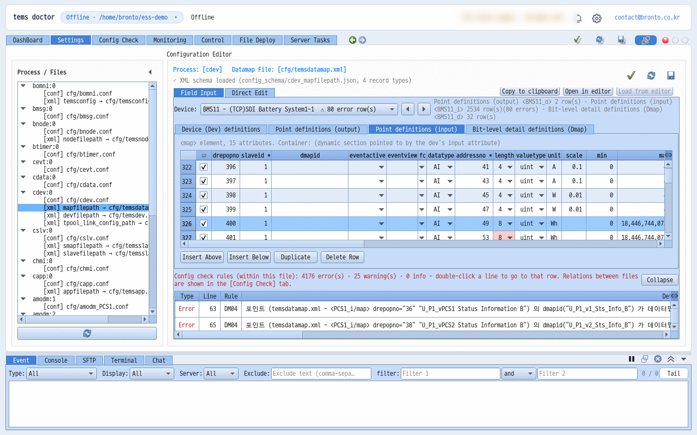
Offline mode NEW
Open, edit and check a tems configuration folder on your PC directly, without connecting to a server (brontod). Use it to prepare settings in the office before a site visit, or to work where there is no internet.
- Choose a local working folder with [Open offline…] in the connection window or with a launch option
- Settings and environment check on the same screens as online
- Connect later and apply to the server with file deployment
- Switch instantly by picking a previously opened local folder from the menu
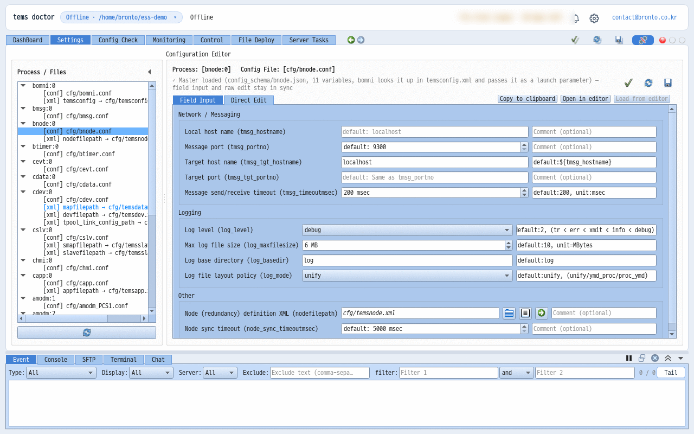
Process control
View the status of each tems process in real time, and start, stop and restart processes remotely.
- Running state · Copy No · resource usage per process
- Remote start · stop · restart
- Control permission request and approval prevents simultaneous operation
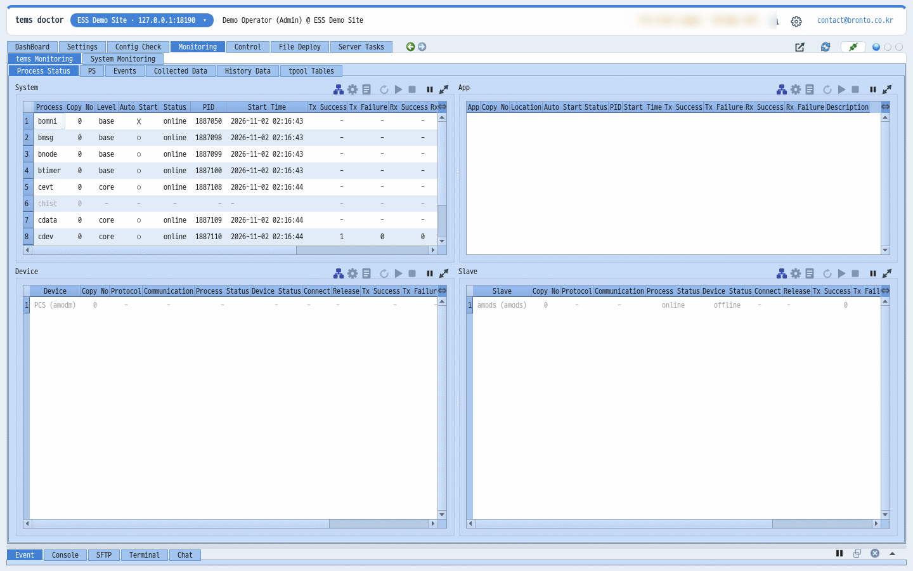
File deployment · backup · rollback
Deploy new version files to many servers at once, with the pre-deployment state saved automatically. If something goes wrong, roll back to the previous state.
- Bulk deployment to multiple servers, overall progress by node
- Automatic backup before deployment · rollback · restart after deployment
- Storage quota management
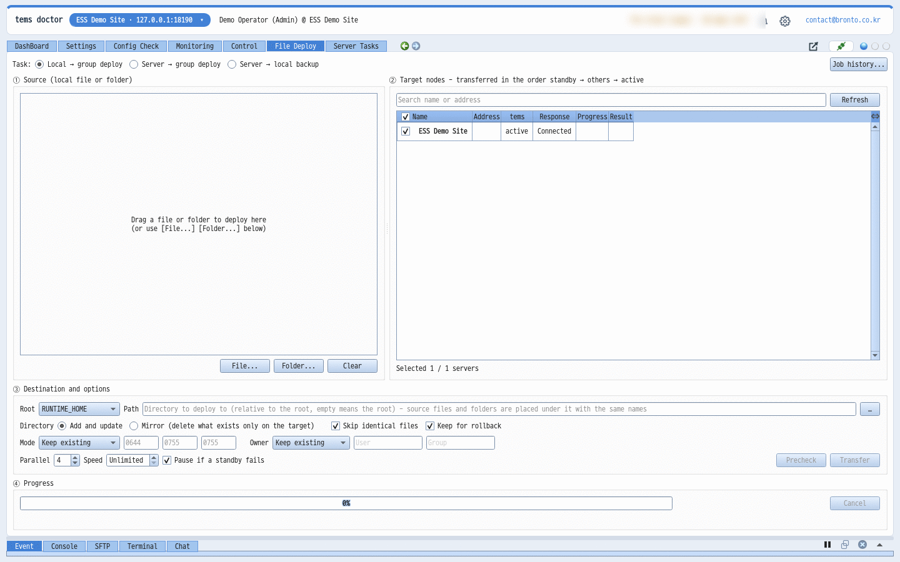
Server tasks · remote install and upgrade
Register frequently used check commands as tasks, pick servers to run them on, and see the results right away. Install brontod on a new server remotely and join it to a group, or upgrade many servers at once.
- Built-in tasks: tems and brontod installation · environment · operations bundles
- Tasks on other servers (SSH) - multiple targets with per-target SSH and sudo passwords
- brontod upgrade: sends only changed files in advance, swaps them all at once and restarts immediately
- Remote installation and join checks for embedded devices (dropbear, busybox) too
- SFTP and terminal: when a host key changes, the old and new fingerprints are shown and you connect after confirming; for servers that block password login, the cause and fix are explained
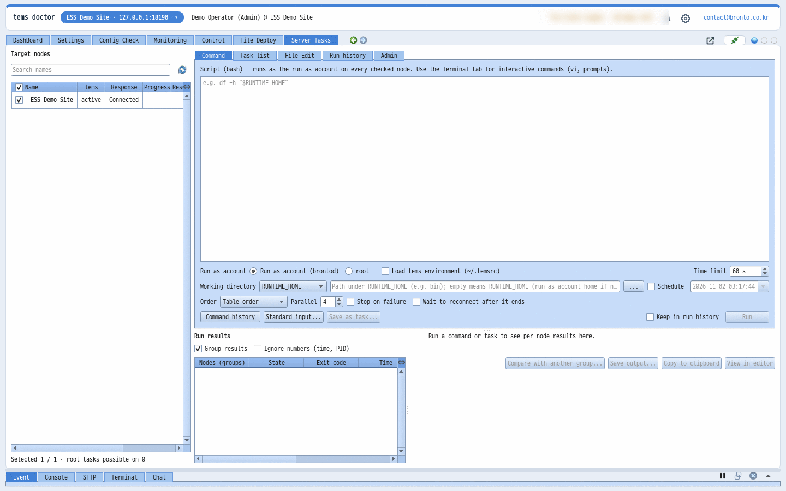
Accounts · groups · team chat
Give each operations team member an account and divide server access by group. Team members looking at the same server can talk right away.
- Log in with an ID or email, access rights per account and group
- Group hub connection - a single hub relays status and events, keeping even large groups light
- Approve join requests · restart or stop brontod on many nodes · move nodes to another group
- Risky commands are verified again on the server (brontod); share actions in group chat
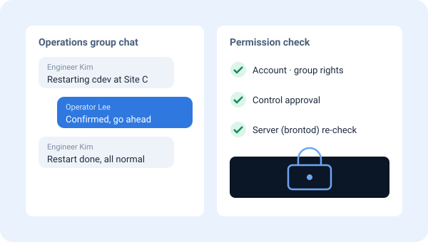
With tVault - deployment and licensing NEW
tdoctor and brontod are installed and updated with tVault. On customer servers, brontod changes only on devices approved by the customer's contact, at the scheduled time. tdoctor uses tVault licenses to separate Basic and Pro.
- One installer sets up tdoctor · Start menu · notification area icon
- Update notifications: now · later · skip, view what's changed
- Pro: file deployment and server tasks on many nodes / Basic: one node at a time
- Signed license files and PC verification; copies run as a 10-day Pro trial
- 14-day Pro trial from our website - apply and the installer arrives by email
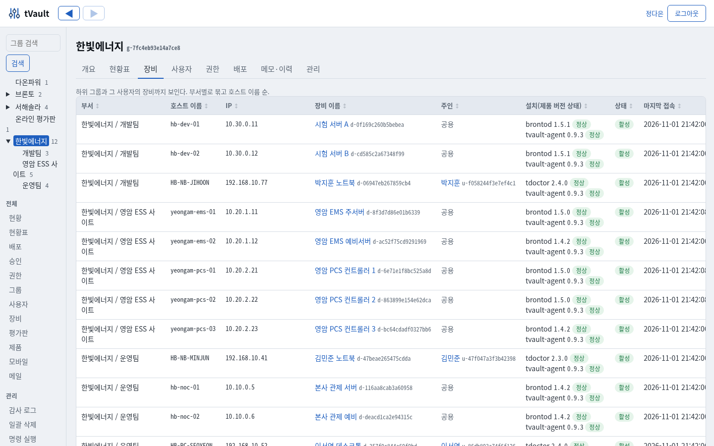
On your phone too - the tdoctor Android app
Do most of what you do in tdoctor on your PC from your phone: dashboard, system graphs and group status board, process start and stop, server tasks and commands, viewing, downloading and uploading server files, tems data (tpool, history, collection), deploying new files, environment check and raw configuration editing, creating chat rooms and inviting members, and audit logs. tems faults, alarms and chat arrive as phone notifications even when the app is closed, the screen is off, or after a reboot.
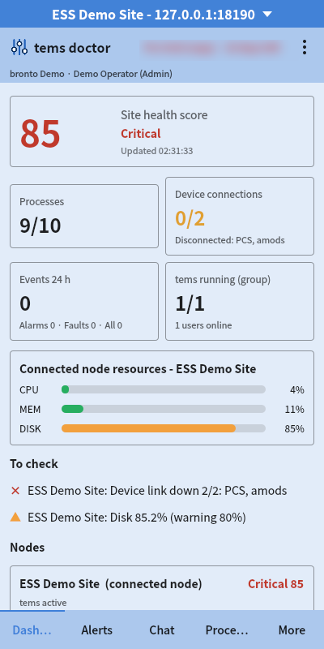
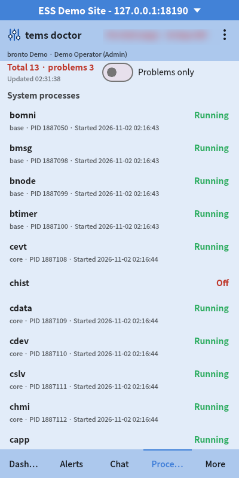
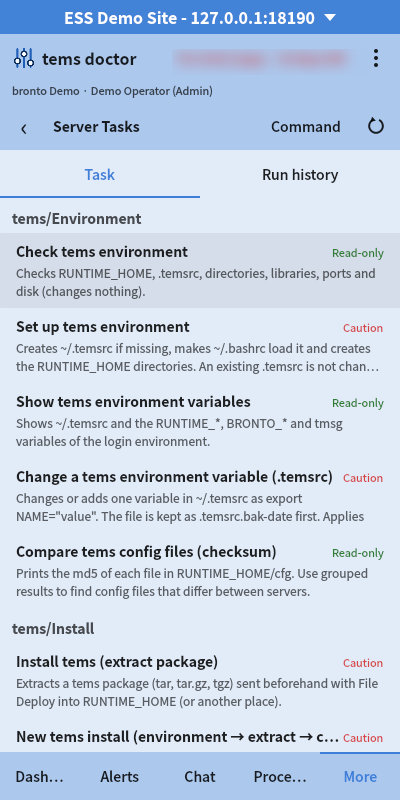
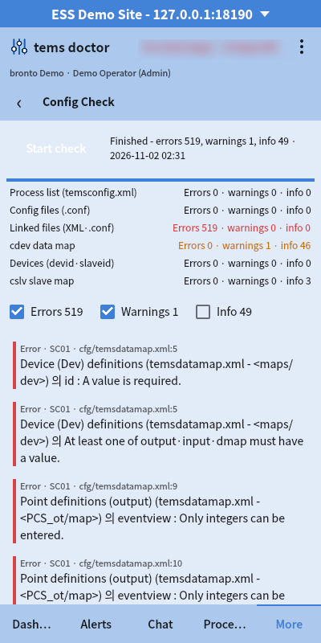
PC · tdoctor
Use every feature on Windows and Linux operator PCs. Korean, English, Japanese and Chinese interface, with a monospaced font bundled for each language.
Server · brontod
Installed on the x64 and ARM64 Linux servers and embedded controllers that run tems. Collects system resources every second and keeps 60 minutes.
Mobile · Android
Korean, English, Japanese and Chinese interface, with the same server themes and markers as the PC. Passwords are encrypted with Android Keystore for automatic login. The app registers directly with tVault to get its license; each account can use 1 PC + 1 phone.
On its own, or together with tems
tOps only
- When you already run tems servers
- When you want to bring operations for many sites into one place
- When you want to respond to incidents without site visits
tems + tOps Recommended
- Build a new site from control to operations in one go
- Validated editing screens matched to the tems configuration scheme
- A single point of support for adoption and operation
Try tOps yourself
Try tdoctor free for 14 days with all Pro features. If you need a test server or a demo, please contact us.